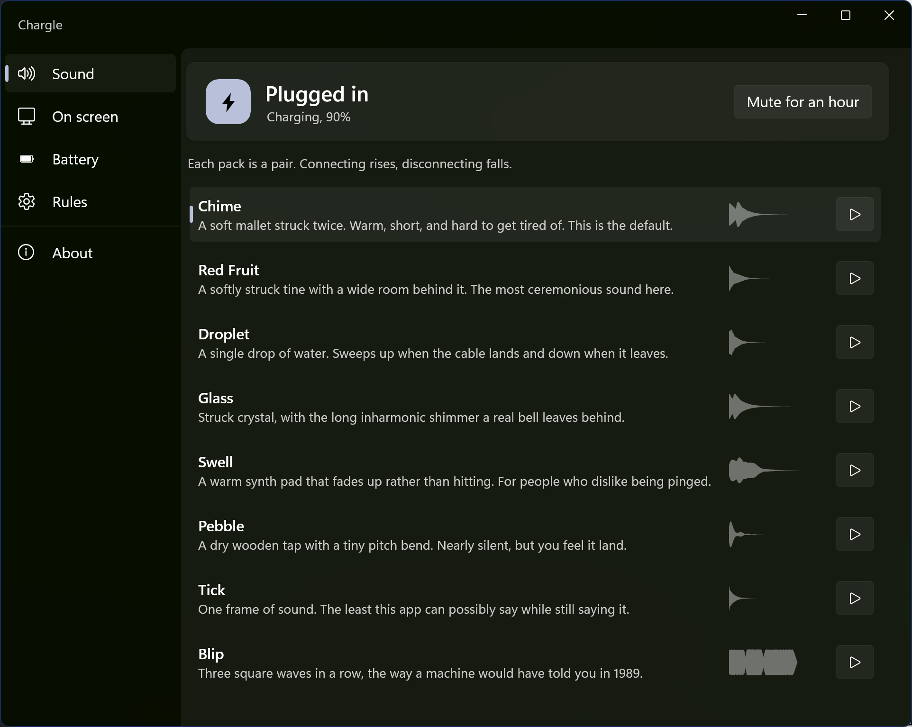

Windows 11 and 10 · version 1.0 · free
Hear the charger go in.
Chargle sits in the tray and watches the power source. Cable in, you get a small rising sound. Cable out, it falls. After a day of it you stop squinting at the battery icon to find out whether the plug is properly seated.
Free, and it updates itself. If you would rather not use the Store there is a portable zip on Releases for x64 and ARM64. Either way there is no account and no telemetry.
Pack Chime Last event none yet Click to sound not yet
48 kHz · generated, not recorded
Eight sounds, and not one of them is a recording.
Every pack is written as code in the repository and rendered to a pair of files by a small tool. Change a few numbers in the synth, run it again, and you can hear the difference straight away. They are loudness matched as well, so swapping packs does not quietly make your laptop louder.
Plugging in rises. Unplugging falls. That is the whole rule, and it is the reason you can tell what happened from the other side of the room.
click through · never takes focus
Or say it without making a sound.
A shared desk is not the place for a chime. The panel does the same job with light instead. You cannot click it, it never steals focus from whatever you are typing into, and it measures against the work area rather than the screen, so it clears the task bar wherever you happen to keep it.
The state and the battery level.
Windows accent. Used while the charger is connected. On battery it stays grey.
GUID_ACDC_POWER_SOURCE
Most of the work went into a gap you cannot see.
The obvious build of this app is late, and once you have noticed the lateness you cannot stop noticing it. Three things sit between the cable and the sound, and every one of them is somewhere to lose time.
The ordinary way
What Chargle does
The right notification
Windows updates GUID_ACDC_POWER_SOURCE the moment it notices the charger change. Watch PBT_APMPOWERSTATUSCHANGE instead, or poll GetSystemPowerStatus on a timer, and you are already reading something slightly out of date.
Off the interface thread
A listener built on window messages has to queue behind everything else the app is doing, so the sound slips whenever the window is busy. Chargle asks for DEVICE_NOTIFY_CALLBACK, which arrives on a system thread and does not wait for anyone.
Nothing left to start up
Opening a file, decoding it and waking a sleeping audio device all cost real time. The sounds are decoded once at startup, and the WASAPI stream can be held open by rendering silence into it, so there is nothing to warm up when the event lands.
Holding the stream open costs a little battery, so it is a switch called Instant mode. Turn it off and the endpoint is released after a few idle seconds, which means the first sound afterwards is the slow one again.
measured with tools/AudioProbe · median of six runs
The claim, checked with a microphone
AudioProbe plays a sound through the real audio path, records the speakers back through WASAPI loopback and times when the audio actually turns up. Six runs each, on a Realtek codec at 48 kHz.
Opening the device is the expensive part, and Instant mode is what skips it. The first sound after a quiet stretch arrives in about 86 ms rather than about 590 ms, so roughly seven times sooner, or half a second in terms you can feel. It is not free in either direction. Holding the stream open costs about 54 ms of its own, because WASAPI has already buffered silence ahead of the moment you plug in and that has to drain first. Against a 555 ms cold open it is still clearly worth it.
The bottom two figures include a fixed offset from the loopback capture, so read them against each other rather than as absolutes. Run it yourself with dotnet run --project tools/AudioProbe -- --benchmark.
rules
It knows when to shut up.
An app that makes a noise has one job beyond making the noise, which is knowing when not to.
Do Not Disturb
Turning on Do Not Disturb is a request for quiet, and this app is not an exception to it. Focus sessions count too.
Screen sharing
Nothing chimes into the middle of your call, and the panel stays off the shared screen too.
Full screen
Games and films are left alone.
Mute for an hour
One click in the tray menu, for the meeting you are two minutes late to.
Battery milestones
An optional chime when it reaches full, and another when it gets low. Both are off until you ask.
Runs at login
On by default, and it starts hidden, so you get the tray icon and nothing else. Switch it off in Rules, or in Windows Settings under Startup apps.

%LOCALAPPDATA%\Chargle\Sounds\
Bring your own, if none of these suit.
Drop a folder with two files in it and restart the app. It reads wav, mp3, m4a, flac, ogg, wma and aiff. The json file is optional and only carries the name and description you want to see in the list.
If you would rather point at two files somewhere else on the disk without making a folder at all, there is a setting for that instead.
MIT licence · no account · nothing to buy
Take it.
From the Microsoft Store
The short way in. Free, signed, and it keeps itself up to date, so you never have to come back here for a newer version.
From a terminal
If you already live in a shell, winget will do the whole thing without you leaving it.
winget install Arihant25.ChargleSee the manifest
The portable build
Download the zip, extract it wherever you like, run Chargle.exe. It is self contained, so there is no runtime to install first. That is also why the download is on the large side.
Releases on GitHubFrom source
Install the .NET 10 SDK and run it. Visual Studio is not needed.
git clone https://github.com/Arihant25/Chargle cd Chargle dotnet run --project src/ChargleBrowse the repository